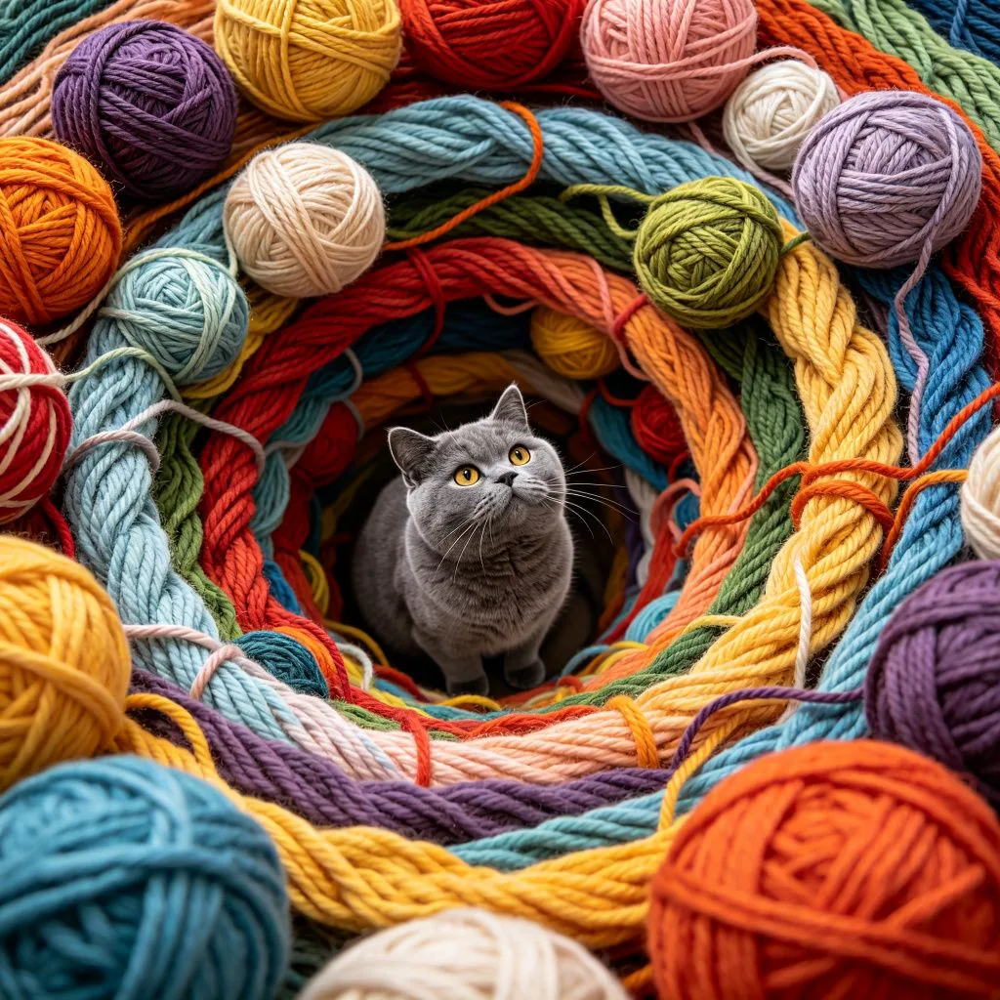

客廳的地板上，一團毛線球正在「自己」滾動——實際上，是一隻美國短毛虎斑貓正用爪子瘋狂地拍打它。貓咪在地上翻滾、跳躍、撲殺，有時還會用嘴咬住毛線球，然後用後腿使勁蹬（這個動作叫做「兔子蹬」，是貓咪狩獵時的經典動作）。毛線滿天飛，貓咪玩得不亦樂乎，整個客廳變成了一個「狩獵現場」。為什麼貓咪對移動的物體（尤其是毛線球）有著如此瘋狂的執著？
貓咪的狩獵本能
要理解貓咪為什麼喜歡玩毛線球，我們需要先了解貓咪的狩獵本能。家貓（Felis catus）是由非洲野貓（Felis silvestris lybica）馴化而來的，馴化歷史大約只有9500年——在動物馴化的時間尺度上，這其實是非常短的。相比之下，狗的馴化歷史超過15000年。由於馴化時間相對較短，家貓保留了大量野生祖先的本能和行為模式，其中最強烈的就是狩獵本能。
在野外，貓是獨居的狩獵者，每天需要花費大量時間尋找和捕捉獵物。一隻野貓每天可能會發起10-20次狩獵嘗試，但成功率只有大約10%——也就是說，大多數狩獵行動都是失敗的。這種高頻率、低成功率的狩獵模式，讓貓咪發展出了強烈的「狩獵驅動力」——即使不餓，貓咪也會被移動的物體吸引，產生追逐和撲殺的衝動。

毛線球之所以能成為貓咪的最愛，是因為它完美地模擬了貓咪獵物的特徵：快速、不規則的移動方式；大小和形狀與老鼠、小鳥等獵物相近；毛線的纖維質地與獵物的毛髮或羽毛有某種相似性；被抓咬時會變形、散開，給貓咪帶來「狩獵成功」的快感。對貓咪來說，一個滾動的毛線球不是玩具，而是一隻需要被征服的「獵物」。
狩獵遊戲的五個階段
如果你仔細觀察貓咪玩毛線球（或其他玩具）的過程，你會發現貓咪的狩獵行為通常包含五個階段：
- 偵察：貓咪發現移動的物體，開始緊張地觀察。耳朵轉向物體的方向，眼睛緊盯，身體微微下蹲，尾巴輕輕擺動。
- 潛行：貓咪開始低著身體，緩慢地向物體移動，腹部幾乎貼地，後腿交替推進。這個階段的貓咪非常安靜，幾乎不會發出任何聲音。
- 伏擊：貓咪在合適的距離停下來，身體進一步下蹲，後腿繃緊，準備跳躍。尾巴快速擺動，瞳孔放大。
- 撲殺：貓咪縱身一躍，用前爪抓住物體，同時用嘴咬住。如果物體繼續移動，貓咪會用後腿使勁蹬（「兔子蹬」），這是貓咪在野外殺死獵物的經典動作。
- 處置：貓咪把「獵物」叼到一個安全的地方，或者開始用爪子拍打、用嘴啃咬，確保「獵物」已經死亡。有些貓咪還會把「獵物」當成戰利品，叼到主人面前展示。
理解貓咪的狩獵階段可以幫助我們更好地和貓咪互動。比如，在和貓咪玩逗貓棒時，應該模仿獵物的移動方式——不規則地移動、暫停、躲藏，讓貓咪經歷完整的狩獵階段。在遊戲結束時，應該讓貓咪「成功捕獲」玩具（比如讓貓咪抓住逗貓棒的末端），然後給予零食獎勵，這樣可以讓貓咪獲得狩獵成功的滿足感，減少挫敗感。
毛線球的安全隱患
雖然毛線球是貓咪的最愛，但也存在一些安全隱患：1. 吞食風險：貓咪可能會吞下毛線，導致腸道阻塞或纏繞。如果發現貓咪嘔吐、食慾不振、便秘或腹瀉，應立即就醫。2. 纏繞危險：鬆散的毛線可能纏繞在貓咪的脖子、爪子或舌頭上，造成血液循環障礙甚至窒息。3. 化學物質：某些毛線可能含有對貓咪有害的染料或化學處理劑。建議選擇天然纖維（如棉、羊毛）製成的毛線，並在貓咪玩耍時進行監督。4. 及時收拾：遊戲結束後，應把毛線球收好，不要讓貓咪在無人監督的情況下長時間玩耍。如果你的貓咪特別喜歡毛線，可以考慮使用更安全的替代品，如毛線球玩具（內部有鈴鐺、外部是編織材質的專用貓玩具）。
玩毛線的美短虎斑，用牠的瘋狂和專注，重演了一場古老的狩獵。對貓咪來說，玩耍不僅是打發時間的娛樂，更是狩獵本能的表達、身體和大腦的鍛煉、以及與主人建立紐帶的方式。作為貓奴，我們應該為貓咪提供充足的玩耍時間和合適的玩具，讓貓咪的狩獵本能得到健康的表達——這樣不僅可以讓貓咪更快樂、更健康，也可以減少貓咪的破壞性行為（如撓沙發、咬電線）。